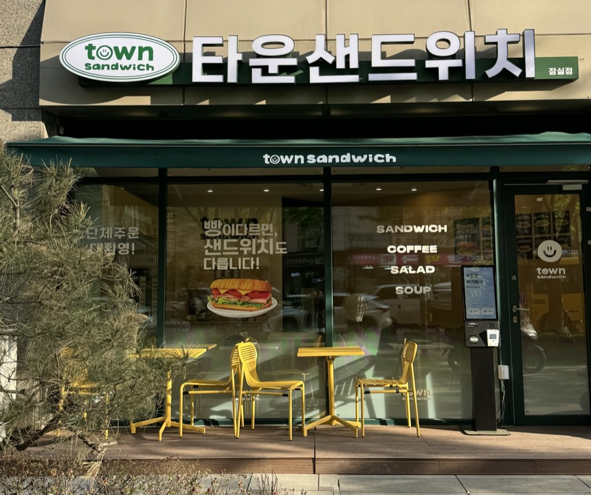
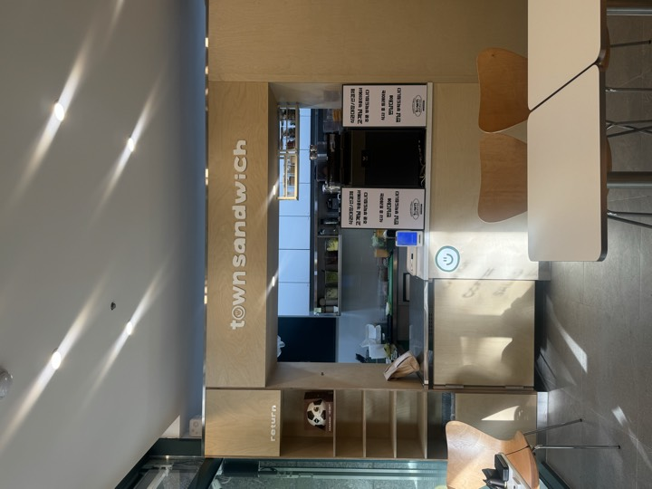
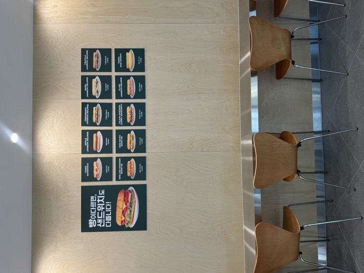
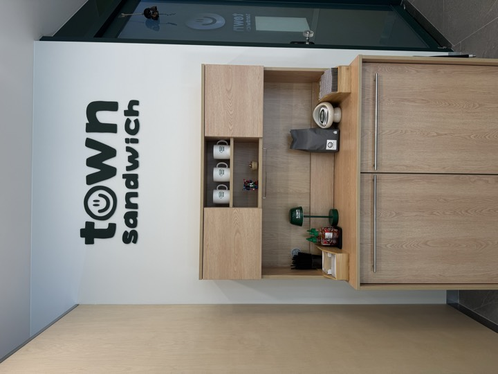
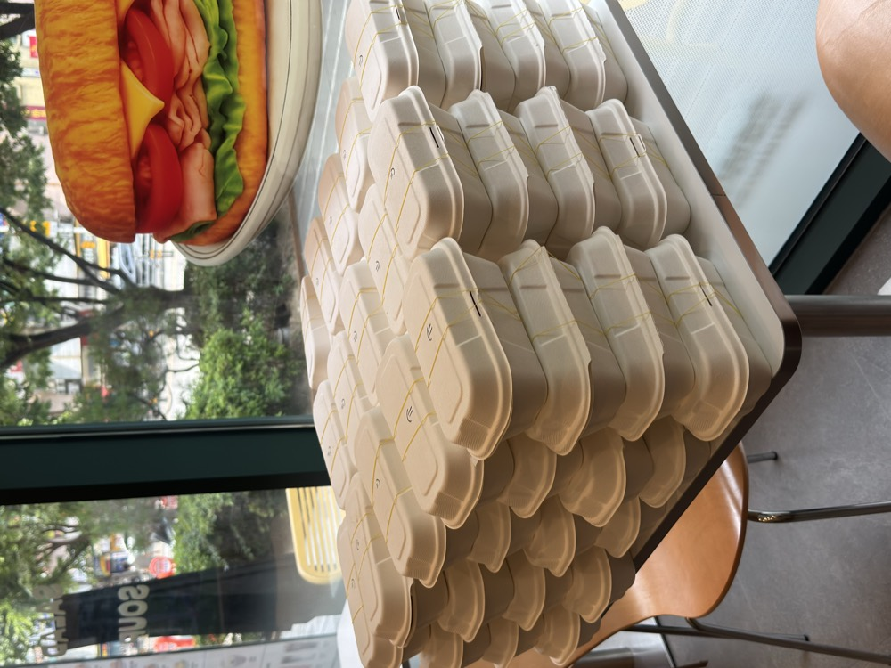

타운샌드위치8,800원
국내산 스모크햄과 치즈, 양상추와 토마토를 넣은 대표 메뉴입니다.

타운샌드위치 잠실점
겉은 바삭하고 속은 촉촉한, 질기지 않은 바게트.
주문과 동시에 만들어 맛있는 한 끼를 전합니다.
잠실 더샵스타파크 상가 1층 · 매일 09:00–20:00

바게트
타운샌드위치는
샌드위치의 맛을 완성하는
바게트의 식감을 중요하게 생각합니다.
메뉴
국내산 스모크햄과 치즈, 양상추와 토마토를 넣은 대표 메뉴입니다.

수제 바질버터와 국내산 햄, 루꼴라. 토마토 추가를 추천합니다.

시나몬 향 애플 콤포트에 국내산 햄과 수제 버터. 달콤짭짤합니다.

수제 크랜베리버터와 국내산 스모크햄, 루꼴라.

수제 트러플버터와 국내산 스모크햄, 루꼴라.

수제 버터와 국내산 스모크햄만 넣은 프랑스식 잠봉뵈르.

오븐에 구운 국내산 닭고기와 야채 초절임. 새콤달콤합니다.

케이준 양념 닭가슴살과 매콤한 커리, 야채와 토마토.

에그마요에 아삭한 야채 초절임을 더한 담백한 반미.

에그마요를 듬뿍 넣었습니다. 토핑을 추가할 수 있습니다.
올인원 세트는 샌드위치·스프·음료를 자유롭게 골라 구성합니다.
예) 타운샌드위치 + 크림 스프 + 아메리카노
16,500원 → 14,500원
커피

그레이 그리스트밀과 함께 만든 ‘타운블렌드’
깊고 묵직한 다크초콜릿의 풍미와
고소한 구운 아몬드의 노트를 담았습니다.
일정한 맛을 위해, AI 기반으로 샷 추출을 조정하는 카예 머신을 사용합니다.
아메리카노 아래에 원당을 깔아, 빨대로 마실 때마다 아그작 씹히는 타운만의 커피. 라떼로도 있습니다.
아메리카노 4,800원라떼 5,300원
매장



혼자서도, 함께여도 편안하게.
타운샌드위치에서 맛있는 식사 시간을 즐겨보세요.
매장 식사 · 포장 · 예약 · 배달 가능
더샵스타파크 지하주차장 이용
평일 1시간 · 주말 2시간 무료
단체주문

회사 회의부터 학교·학원 행사, 촬영 현장과 각종 모임까지.
함께 즐길 샌드위치와 음료를 타운에서 준비해 보세요.
주문 날짜와 수량, 예산을 알려주시면
메뉴 구성과 수령 일정을 상담해 드립니다.
원활한 준비를 위해 미리 전화로 문의해 주세요.
매장 정보
안내
서울 송파구 올림픽로35가길 10 103호, 잠실 더샵스타파크 상가 1층입니다. 매일 09:00–20:00 영업합니다.
매장 식사와 포장 모두 됩니다. 예약과 배달도 가능합니다.
더샵스타파크 지하주차장을 이용하시면 됩니다. 평일 1시간, 주말 2시간 무료입니다.
가능합니다. 샌드위치·샐러드·음료 세트로 구성할 수 있고, 인원수와 예산에 맞춰 메뉴를 상담해 드립니다.
주문 날짜와 수량, 예산을 알려주시면 메뉴 구성과 수령 일정을 상담해 드립니다. 최소 주문 수량은 따로 없고, 넉넉히 3일 전에 문의해 주시면 준비가 수월합니다. 일정이 급하시면 상황에 따라 가능하니 매장(0507-1448-2447)으로 문의해 주세요.
서울 지역까지 배달해 드립니다. 배달비는 배달하는 지역에 따라 달라 매장으로 문의해 주세요. 단체 배달 주문도 매장과 동일한 메뉴 가격으로 제공합니다.